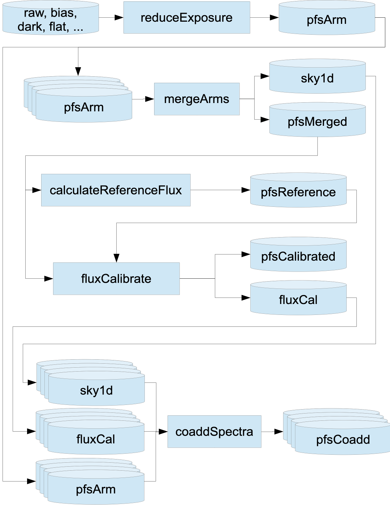

PFS 2D Pipeline Overview
The latest PFS 2D data reduction pipeline (DRP) is now based on the third generation (Gen3) LSST middleware. The PFS pipeline organizes data using key terms:
-
visitrefers to a unique exposure identifier. -
spectrographdefines the spectrograph module with an integer ranging from1–4. -
armdefines spectrograph's blue, red, near-IR, and medium-resolution red arms (b,r,n,m). -
catIdspecifies the catalog source of an object. -
objIdis a unique (within a catalog) 64-bit identifier for an astronomical source. -
pfsDesignIdencodes the fiber configuration. -
pfsVisitHashuniquely defines a set of combined visits.
More details can be found in Appendix.
PFS 2D DRP Workflow
The PFS 2D DRP generally follows the following flowchart.

Products
pfsArm: These are wavelength-calibrated but not combined or flux-calibrated single spectra from a single visit and a single arm.pfsMerged: These are arm-combined spectra from a single visit, wavelength calibrated but not flux calibrated.pfsCalibrated: These are flux-calibrated arm-merged spectra from a single visit.pfsCoadd: These are coadded spectra, and the final products for science.